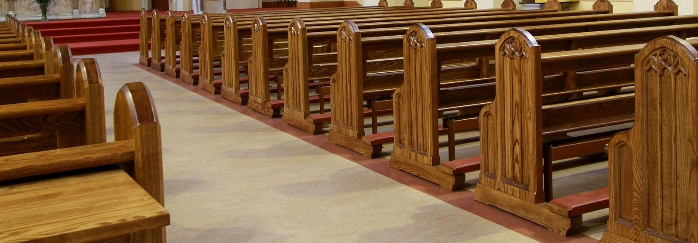
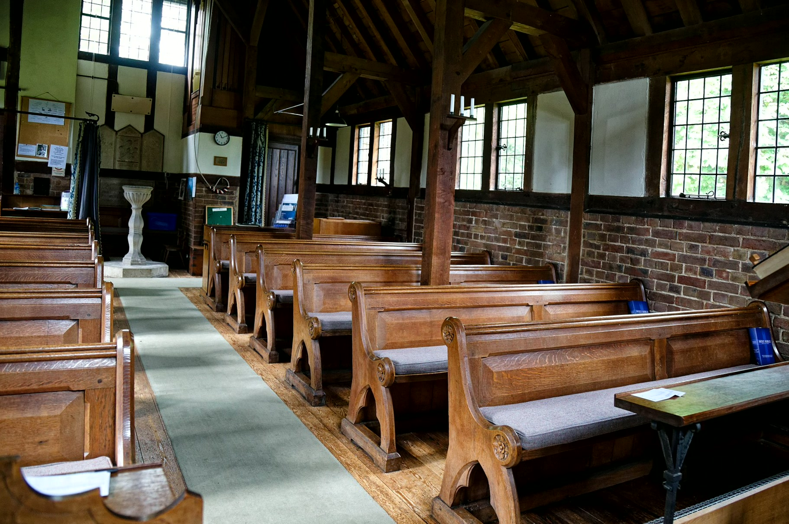

SCHODMAX
Schody, drzwi i meble sakralne z drewna.
Stolarka pod konkretne wnętrze. Schody i drzwi do domu, ławki i ołtarze do kościoła.
Schody drewniane
Drzwi na wymiar
Meble sakralne
Pomiar na miejscu
Montaż u klienta

Kim jesteśmy
Kto robi Twoje schody
Robimy schody drewniane, drzwi i meble sakralne. Każde zlecenie zaczyna się od pomiaru na miejscu, bo schody i meble do kościoła zawsze robi się pod konkretne wnętrze.
Szczegóły i termin ustalamy przed rozpoczęciem pracy.
Poznaj nas →
Opinie
Co mówią klienci
Wpisz SCHODMAX w Google i sprawdź, co o nas piszą klienci.
Realizacje
Schody, drzwi i meble
Schody, drzwi i meble do kościołów - tak może wyglądać drewno zrobione pod konkretne wnętrze.



Współpraca
Zacznijmy od krótkiej rozmowy.
Odezwij się z pytaniem - odpowiem konkretnie, nic za to nie płacisz.